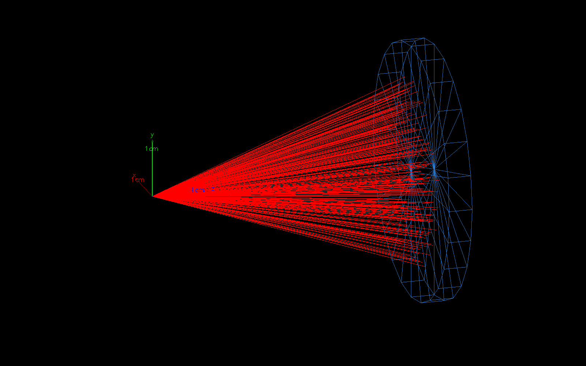
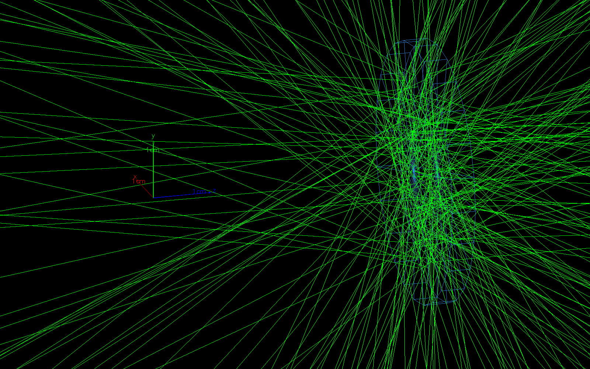

כמה מסלולים ירוקים?
הדבר הראשון שרואים כשפותחים את ldns הוא חלון: הממיר, קונוס של פרוטונים אדומים, ובתקווה גם נייטרונים ירוקים. בפרק הזה נלמד לכוון את החלון הזה, לצבוע, לסנן ולשמור תמונה, ולמה תמונה לא עונה על השאלה "כמה".
נתחיל בניסוי. 10000 פרוטונים מהספקטרום האמיתי של הלייזר, מ-0.5 MeV ובלי משקלים, יורים על דיסקת Be. מסנן (filter) נותן לצייר רק נייטרונים.
בספקטרום האמיתי רוב הפרוטונים מתחת ל-2 MeV, מתחת לסף של ⁹Be(p,n) ב-2.06 MeV, והם נעצרים בלי לייצר כלום. לכן תמונה של התערובת האמיתית כמעט ריקה מירוק. כדי לראות נייטרונים נולדים, מטים את המקור: מעלים את Emin ודוגמים flat, כך שרוב הפרוטונים שנורים הם אלה שמייצרים נייטרונים.
זה מותר בתמונה, כי תמונה לא סופרת. בתוצאה מספרית מקור מוטה חייב לבוא עם משקלים, כמו שראינו בפרק 5. הבורר שמתחת לסימולציה מריץ את אותו ניסוי עם המקור של ריצת ה-Be, flat מ-1.85 MeV.
סצנה, מערכת ציור וצופה
מערכת הוויזואליזציה של Geant4 בנויה משלושה חלקים. סצנה (scene) היא רשימת מה שמציירים: הגיאומטריה, הצירים, המסלולים. מטפל סצנה (scene handler) שייך למערכת ציור (graphics system) אחת, ומתרגם את הסצנה לשפה שלה. צופה (viewer) הוא מבט אחד על הסצנה: מאיזה כיוון, באיזה סגנון ובאיזה זום.
מערכות הציור שנפגוש: OGL, ציור OpenGL בחלון של Qt, ו-TSG מציירות בחלון, TSG_OFFSCREEN מציירת לזיכרון, ו-VRML2FILE ו-HepRepFile כותבות קובץ שפותחים בתוכנה אחרת. /vis/open פותח מערכת ציור ואיתה מטפל וצופה, ו-/vis/drawVolume מכניס את הגיאומטריה לסצנה. כך מתחיל macros/vis.mac של ldns:
/vis/open /vis/viewer/set/autoRefresh false /vis/drawVolume /vis/viewer/set/viewpointThetaPhi 70 20 deg /vis/viewer/set/style surface /vis/viewer/set/hiddenMarker true /vis/viewer/zoom 4 /vis/scene/add/axes 0 0 0 10 mm /vis/scene/add/trajectories smooth
נקודת המבט היא כיוון, מהמטרה אל המצלמה. viewpointVector נותן אותו כווקטור x y z, ו-viewpointThetaPhi כשתי זוויות: θ מציר z, ו-φ סביבו. בברירת המחדל ציר y למעלה במסך. בצופה למטה המבט של vis.mac, והחץ בפינה מראה לאן הקרן (+z) הולכת על המסך.
המצלמה ב--1 0 0 יושבת בצד של x השלילי ומסתכלת לכיוון +x. כשהראש של המצלמה ב-+y, הכיוון +z יוצא ימינה, וכך הקרן זורמת משמאל לימין. ההערות של macros/template_picture.mac אומרות בדיוק את זה, ומראות גם את שאר פקודות הצופה:
# TSG_OFFSCREEN = draw into a file (no window); size in pixels /vis/open TSG_OFFSCREEN 1600x1000 /vis/viewer/set/autoRefresh false /vis/drawVolume # direction FROM which you look: -1 0 0 = from the side (beam left -> right); # -1 0.35 -0.3 = oblique from above /vis/viewer/set/viewpointVector -1 0.35 -0.3 /vis/viewer/set/lightsVector -1 0.5 0.5 # wireframe (see inside) or surface (solid); auxiliaryEdge draws all edges of the cylinders /vis/viewer/set/style wireframe /vis/viewer/set/auxiliaryEdge true /vis/viewer/zoomTo 1.3
style wireframe מצייר שלד של קווים, ו-surface משטחים. auxiliaryEdge true מוסיף את כל הקווים של הגליל, כי בלעדיו רואים בעיקר את שתי הפאות. zoomTo 1.3 הוא זום מוחלט, ו-zoom 4 מכפיל את הזום הנוכחי. /vis/scene/add/axes 0 0 0 10 mm מצייר צירים באורך 10 mm מהמקור: Geant4 צובע אותם באדום, בירוק ובכחול, וכאן הם בצבע הטקסט, כי באתר הצבעים האלה שמורים לחלקיקים.
הסצנה היא תפאורה על במה, ומערכת הציור היא סוג המצלמה: וידאו, סטילס או סורק. הצופה הוא מקום ישיבה באולם. אפשר לשבת במקום אחר בלי לבנות את התפאורה מחדש.
צבעים, מסננים וצבירה
הקווים בתמונה הם trajectories: הרשומה ש-Geant4 שומר לכל מסלול (track), עם נקודה בסוף כל צעד, כדי שיהיה מה לצייר. /vis/scene/add/trajectories smooth מוסיף אותם לסצנה, ו-smooth שומר גם נקודות ביניים, כך שמסלול מעוגל נראה חלק.
איך לצבוע אותם קובע מודל מסלולים (trajectory model). ב-vis.mac של ldns הוא drawByParticleID, עם צבע לכל חלקיק: פרוטון אדום, נייטרון ירוק, גמא צהוב ואלקטרון כחול. באירוע הסכמטי למטה פרוטון נעצר בדיסקה, מייצר נייטרון וגמא, והגמא מעיף אלקטרון אחד בדרך החוצה.
כשהמאקרו לא יוצר מודל, Geant4 צובע לפי מטען בלבד, drawByCharge: בברירת המחדל כחול לחיובי, אדום לשלילי וירוק לניטרלי. אז הפרוטון כחול, האלקטרון אדום, והנייטרון והגמא באותו ירוק. בהנפשה שלוש הקבוצות מצוירות בלי צבעי החלקיקים, כי באתר הצבעים האלה שמורים לחלקיק עצמו. זו הסיבה ש-vis.mac בונה מודל משלו:
/vis/modeling/trajectories/create/drawByParticleID /vis/modeling/trajectories/drawByParticleID-0/set proton red /vis/modeling/trajectories/drawByParticleID-0/set neutron green /vis/modeling/trajectories/drawByParticleID-0/set gamma yellow /vis/modeling/trajectories/drawByParticleID-0/set e- blue # show only protons and neutrons (comment out to see everything) /vis/filtering/trajectories/create/particleFilter /vis/filtering/trajectories/particleFilter-0/add proton /vis/filtering/trajectories/particleFilter-0/add neutron /vis/scene/endOfEventAction accumulate 200 /vis/viewer/set/autoRefresh true
מסנן (filter) מחליט אילו מסלולים יצוירו. particleFilter-0/add מוסיף חלקיק לרשימה, reset מרוקן אותה, ו-active false מכבה את המסנן. במצב הרגיל, soft, מסלול שנפסל עדיין נשלח למערכת הציור ומסומן כבלתי נראה. אחרי /vis/filtering/trajectories/mode hard הוא לא נשלח בכלל, וזה חוסך זיכרון כשצוברים הרבה אירועים.
וצבירה: endOfEventAction accumulate 200 אומר לצבור בתמונה אחת את המסלולים של עד 200 אירועים. בלי השורה הזאת כל אירוע חדש מחליף את הקודם, ובסוף ריצה רואים רק את האחרון.
חלון, ותמונה בלי חלון
הפקודה ./ldns -u vis_30J.mac פותחת את החלון של Geant4 עם הממיר והמקור של 30 J: Be בעובי 4 mm, הספקטרום האמיתי, analog מ-0.5 MeV. בשורת הפקודה שבתחתית החלון מקלידים /run/beamOn 300, ואחר כך מסובבים את התמונה בגרירה ומקרבים בגלגלת.
גרירה בעכבר היא פקודת צופה, כמו viewpointThetaPhi: היא משנה רק את המקום של המצלמה. הסימולציה כבר נגמרה. Geant4 שומר את האירועים שצריך לציור, והצופה מצייר אותם שוב מכל כיוון חדש. אירועים חדשים יש רק אחרי /run/beamOn נוסף.
ובלי חלון בכלל: עם -m ldns לא פותח ממשק גרפי. אלה השורות ב-ldns.cc:
// GUI only when no macro is given (pass a clean argv to Qt) G4UIExecutive* ui = nullptr; if (macro.empty()) ui = new G4UIExecutive(1, argv);
במקום חלון, /vis/open TSG_OFFSCREEN 1600x1000 מצייר לזיכרון, ו-/vis/tsg/export כותב את הציור לקובץ. כך נוצרו שתי התמונות של הפרק, מ-picture_30J.mac עם -t 1: 300 אירועים לוקחים שניות גם בהליך אחד. זו התמונה הראשונה:

-1 0.35 -0.3, שלד עם auxiliaryEdge, ומסנן של פרוטונים ונייטרונים. השכבה כחולה כי ldns צובע כל שכבה בצבע משלה. אין אף מסלול ירוק.לתמונה השנייה אותו מאקרו מחליף מסנן ומקור, מריץ עוד 50000 אירועים ושומר שוב. שתי השורות שלפני הקטע מרוקנות את המסנן ומשאירות רק נייטרונים: particleFilter-0/reset ו-particleFilter-0/add neutron. אחריהן, מתוך picture_30J.mac:
/vis/filtering/trajectories/mode hard /ldns/src/Emin 5 MeV /ldns/src/sampling flat /vis/scene/endOfEventAction accumulate 50000 /run/beamOn 50000 /vis/viewer/rebuild /vis/tsg/export zb_png results/neutrons_30J_Be4.png

התמונה איננה התוצאה
התמונה השנייה מלאה בירוק. כמה נייטרונים זה לפרוטון? כדי לענות צריך לדעת איך היא נוצרה: מקור מוטה, דגימה flat עם משקלים, ומסנן. בסימולציה למטה אותו עיקרון על המקור של ריצת ה-Be, flat מ-1.85 MeV: למעלה התמונה, ולמטה הטבלה.
התמונה מציירת כל מסלול באותו קו, והטבלה סופרת כל נייטרון במשקל שלו. לכן המספרים באים מהטבלאות ומהסיכום בסוף הריצה (פרק 8), ואף פעם לא מספירת קווים. גם המאקרו של התמונות אומר את זה: /ldns/out/level 0, בלי טבלאות, כי הריצה הזאת לא בשביל מספרים.
ויש חלופה בטקסט, כשרוצים לדעת מה קרה באירוע מסוים: /tracking/verbose 1 מדפיס כל צעד של כל חלקיק, עם המיקום, האנרגיה והתהליך. זה הרבה פלט, ולכן מריצים אותו עם /run/beamOn 1 ועם -t 1, כך שאירוע אחד מודפס בסדר, בלי שורות של הליכים אחרים באמצע.
לקרוא תמונה
אז בשביל מה תמונה? לבדוק שהגיאומטריה והקרן במקום: שהקונוס נכנס בדיסקה, שהקרן הולכת לכיוון הנכון, שהשכבות בסדר הנכון. בתמונה הראשונה הקווים האדומים יוצאים מהמקור בקונוס של \(20°\) ונכנסים לדיסקה, שהפאה הקדמית שלה ב-45 mm. בסימולציה, הדיסקה במבט מהצד, מוגדלת.
פרוטון טעון מאבד אנרגיה ברציפות, ועוצר אחרי הטווח שלו: כ-1.3 mm ב-Be ל-13 MeV, ה-cut-off של הספקטרום, ופחות מעשירית המילימטר לרוב הפרוטונים, שמתחת ל-2 MeV. לכן ב-4 mm של Be שום פרוטון לא עובר, וכל הנייטרונים נולדים בשכבה הדקה שליד הפאה הקדמית. מה עוד קוראים בתמונות של הפרויקט:
- הקונוס נכנס בדיסקה. ב-45 mm הרדיוס שלו \(45\cdot\tan 20° = 16.4\) mm, והדיסקה ברדיוס 22 mm. אם קווים אדומים היו עוברים ליד הדיסקה, משהו בגיאומטריה או במקור לא נכון.
- הקרן הולכת ל-+z. הצירים הקטנים במקור מראים את הכיוונים. ב-
-1 0 0הקרן משמאל לימין. - נייטרונים יוצאים לכל הכיוונים, בקווים ישרים: אין להם מטען, ובחוץ יש ואקום. בריצת ה-Be 59% מהם יצאו קדימה, \(p_z > 0\), אבל את זה רואים בגרף של פרק 8, לא בעין.
- גמא ואלקטרונים לא מופיעים בשתי התמונות, כי המסנן לא מעביר אותם.
particleFilter-0/active falseמחזיר אותם. - הצבעים של השכבות באים מ-ldns: השכבה הראשונה כחולה, ובתמונה עם כמה שכבות כל אחת בצבע אחר.
כרטיס הפקודות
שתים עשרה הפקודות שהופיעו בפרק, לפי הסדר שבו מאקרו של תמונה משתמש בהן.
פקודות הוויזואליזציה
/vis/open/vis/open TSG_OFFSCREEN 1600x1000פותח מערכת ציור, מטפל וצופה: חלון, או ציור לזיכרון.
/vis/drawVolumeמכניס את הגיאומטריה לסצנה.
/vis/viewer/set/viewpointVector -1 0 0viewpointThetaPhi 70 20 degכיוון המבט, מהמטרה אל המצלמה. ציר y למעלה.
/vis/viewer/set/style wireframesurfaceשלד של קווים, או משטחים.
/vis/viewer/set/auxiliaryEdge trueכל הקווים של הגליל, לא רק הפאות.
/vis/viewer/zoomTo 1.3זום מוחלט. zoom מכפיל את הנוכחי.
/vis/scene/add/axes 0 0 0 10 mmצירים באורך 10 mm מהמקור.
/vis/scene/add/trajectories smoothהמסלולים של האירועים נכנסים לסצנה.
/vis/modeling/trajectories/create/drawByParticleIDdrawByParticleID-0/set proton redצבע לכל חלקיק. בלי מודל: drawByCharge.
/vis/filtering/trajectories/create/particleFilterparticleFilter-0/add neutron/vis/filtering/trajectories/mode hardמסנן: רק החלקיקים ברשימה מצוירים. reset מרוקן את הרשימה, ו-mode hard לא שולח את מה שנפסל למערכת הציור, וחוסך זיכרון.
/vis/scene/endOfEventAction accumulate Nצובר בתמונה אחת את המסלולים של עד N אירועים. בלעדיה כל אירוע מחליף את הקודם.
/vis/tsg/export zb_png f.pngשומר את מה שהצופה מצייר כקובץ PNG, בלי חלון, אחרי /vis/open TSG_OFFSCREEN.
מה הכרטיס לא אומר: כמה נייטרונים יש. מספר הקווים תלוי במקור, בדגימה ובמסנן שבחרנו בשביל התמונה. autoRefresh false בהתחלה ו-true בסוף רק חוסכים ציורים באמצע המאקרו, ו-/vis/viewer/rebuild מצייר מחדש לפני השמירה.
המספרים מאחורי התמונות של הפרק:
| ממיר בתמונות | Be 4 mm, r = 22 mm, z = 45 mm |
|---|---|
| נייטרונים לפרוטון, התערובת מ-0.5 MeV | 1.97e8 / 1.28e12 = 1.54e-4 |
| מסלולי נייטרונים לפרוטון, flat מ-1.85 MeV | 6126 / 3e6 = 2.04e-3 |
| משקל ממוצע של שורה ב-leak | 0.219 |
| נייטרונים לפרוטון מעל 1.85 MeV | 4.47e-4 |
| טווח של פרוטון 13 MeV ב-Be | ≈ 1.3 mm |
| רדיוס הקונוס בפאה הקדמית | 16.4 mm |
השורות 6126 והמשקל 0.219 הם של ריצת ה-Be בעובי 2 mm. מעבר לטווח של הפרוטונים העובי כמעט לא משנה את מספר הנייטרונים.
מעבדת הצפייה
צופה שלם: נקודת מבט, זום, סגנון, קווי עזר, צירים, מקור, מסנן ומודל צבעים, וכפתור שמריץ אירועים ומוסיף אותם לתמונה. מתחת לסימולציה, המאקרו שנותן את התמונה הזאת. כמה דברים שכדאי לנסות:
- להגיע למבט מהצד שבו הקרן משמאל לימין, ולמצוא את θ ואת φ שלו.
- להשאיר רק נייטרונים, להריץ כמה אלפי אירועים מהתערובת האמיתית, ואז את אותו מספר עם flat מ-1.85 MeV.
- לעבור ל-
drawByCharge: מה עוד אפשר להבדיל בין פרוטון לנייטרון? - לסובב את המבט עד θ = 0: לאן נעלם הקונוס?
אתגר: לשחזר את התמונה
למעלה תמונת מטרה של אותה ריצה, ולמטה הצופה שלנו. מכוונים את הצופה עד שהתמונות זהות: בשלב הראשון רק כיוון המבט, בשני גם הסגנון, ובשלישי גם קווי העזר והמסנן.
בדיקה ראשונה שמצליחה שווה 3 נקודות, שנייה 2, ואחר כך 1. המטרות משתנות בכל סיבוב.
מלכודות
ארבע טעויות שקורות מול החלון. שתיים מהן עולות זיכרון או זמן, ושתיים עולות מסקנה לא נכונה.
תרגילים
חמש שאלות שכדאי לפתור לפני שפותחים את החלון. כדאי לנסות לבד, ולפתוח רמז רק כשנתקעים.
בוחן
חמש שאלות על הפרק ועוד שתיים לחזרה מפרקים 1 ו-2. הציון הטוב ביותר נשמר, ואפשר לנסות שוב כמה פעמים שרוצים.
כרטיס כיס
ויזואליזציה על כף היד
TSG_OFFSCREEN, VRML2FILE, HepRepFile), צופה (מאיפה ואיך).viewpointVector -1 0 0 מהצד, הקרן משמאל לימין. viewpointThetaPhi θ φ deg: הווקטור \((\sin\theta\cos\varphi, \sin\theta\sin\varphi, \cos\theta)\). ציר y למעלה.wireframe רואה פנימה, surface גוף מלא, auxiliaryEdge true כל קווי הגליל.drawByParticleID עם set proton red וכו'. בלי מודל: drawByCharge, ונייטרון וגמא באותו צבע.particleFilter-0/add neutron, reset, active false; mode hard חוסך זיכרון. צבירה: endOfEventAction accumulate N../ldns -m pic.mac -t 1 עם /vis/open TSG_OFFSCREEN 1600x1000 ו-/vis/tsg/export zb_png f.png./tracking/verbose 1 עם /run/beamOn 1 ו--t 1. ובשביל מספרים: הטבלאות.